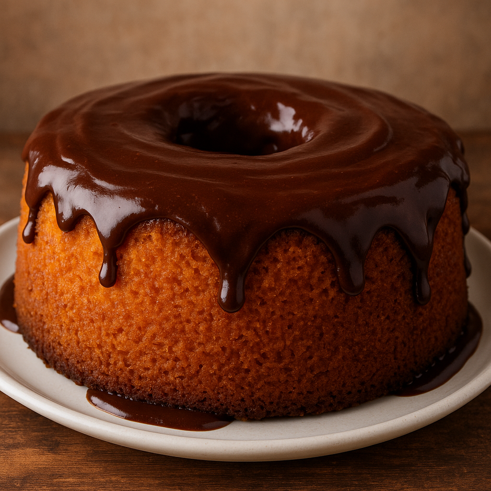

Voltar
Receita: Bolo de Cenoura

Ingredientes (forma de 20 cm)
Massa:
- 3 Cenouras médias (cerca de 300g)
- 3 Ovos
- 1 Xícara (Chá) de Óleo
- 2 Xícaras (Chá) de Acúcar
- 2 Xícaras (Chá) de Farinha de Trigo
- 1 colher (Sopa) de Fermento Químico
Cobertura de Chocolate:
- 4 colheres (Sopa) de Chocolate em Pó ou Cacau em Pó 50%
- 4 colheres (Sopa) de Açúcar
- 1 colher (Sopa) de Manteiga ou Margarina
- 3 colheres (Sopa) de Leite
Modo de Preparo
- Massa
- No liquidificador, bata as cenouras, os ovos e o óleo até ficar homogêneo.
- Em uma tigela, misture o açúcar e a farinha. Depois, adicione a mistura batida no liquidificador.
- Por último, adicione o fermento e mexa lentamente, até a massa ficar homogênea.
- Despeje em uma forma untada e leve ao forno pré-aquecido a 100Cº por ~40 inutos
- Cobertura
- Em uma panela, despeje todos os ingredientes, e leve ao fogo baixo até engrossar.
- Despeje sobre o bolo ainda quente e espalhe com uma espátula